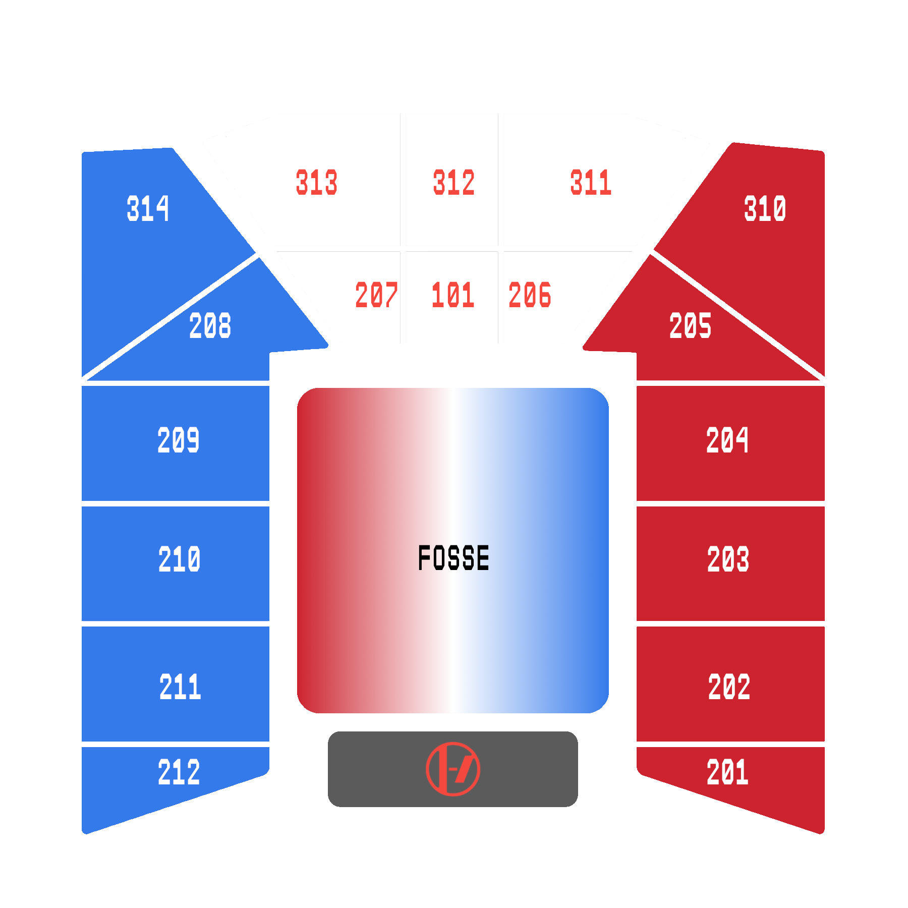
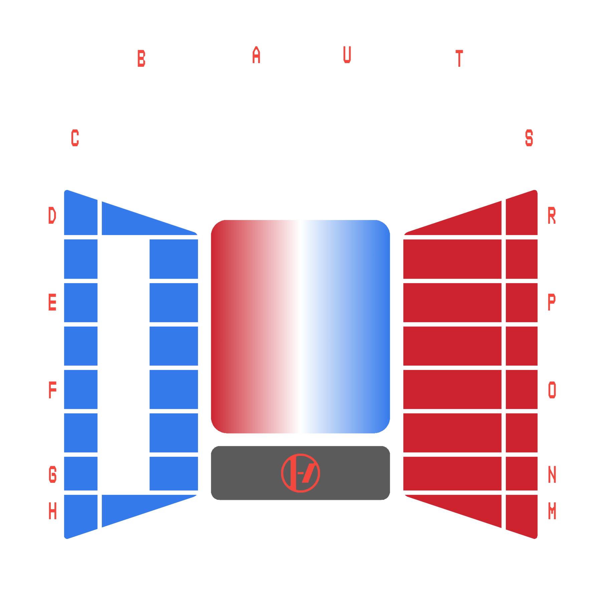

Choisissez votre concert
Choisissez votre bloc
.
.
Selectionnez votre concert et votre emplacement pour recevoir votre couleur.
Quand Mulberry Street commence, mettez votre luminosité au maximum, affichez votre couleur et pointez votre écran vers la scène.
Note : N'hésitez pas à faire une capture d'écran de votre couleur pour y accéder plus facilement après.
Quand Mulberry Street commence, mettez votre luminosité au maximum, affichez votre couleur et pointez votre écran vers la scène.
Note : N'hésitez pas à faire une capture d'écran de votre couleur pour y accéder plus facilement après.
LYON

PARIS
